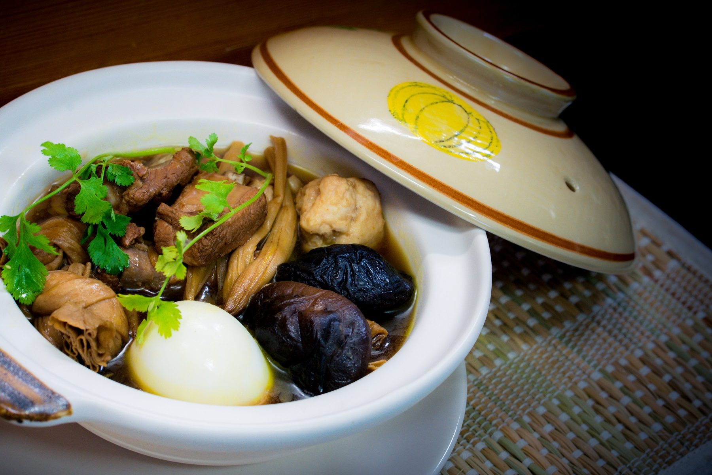
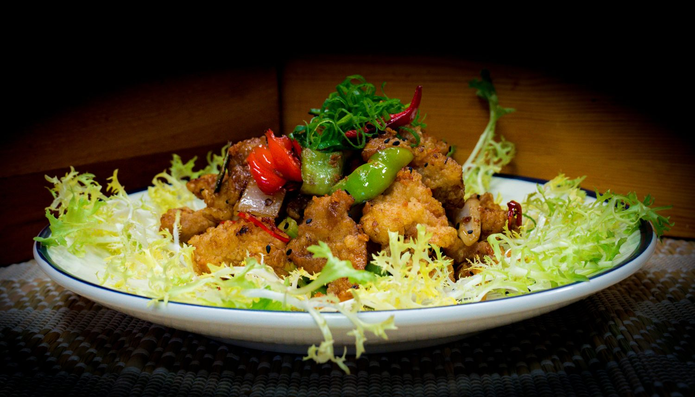
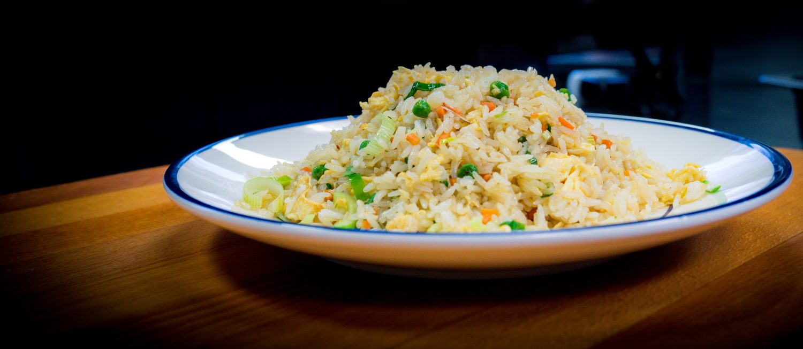

Welkom voor een snelle hap of een uitgebreide maaltijd, alleen, met familie of met vrienden.
Onze kaart is uitgebreid. Dit noemen gasten vaak in hun reviews.

"Every dish was beautifully prepared, perfectly seasoned, and genuinely interesting."
Anastasiia B., Google"The food tastes amazing and the quality is high."
Afsaneh, Google"Such a wonderful restaurant with the most attentive staff! We got the herbal spareribs soup and the Malaysian chicken curry."
Hridya H., Google"Truly exquisite! The grilled rice noodles with vegetables, shrimp, and eggs were delicious!"
Sabrina L., Tripadvisor
Old Town is een Aziatisch fastfoodrestaurant, gespecialiseerd in Maleisische en Kantonese gerechten. Je bent welkom voor een snelle hap of een uitgebreide maaltijd, alleen, met familie of met vrienden.
Elke dag 12:00 tot 21:00
Woensdag gesloten